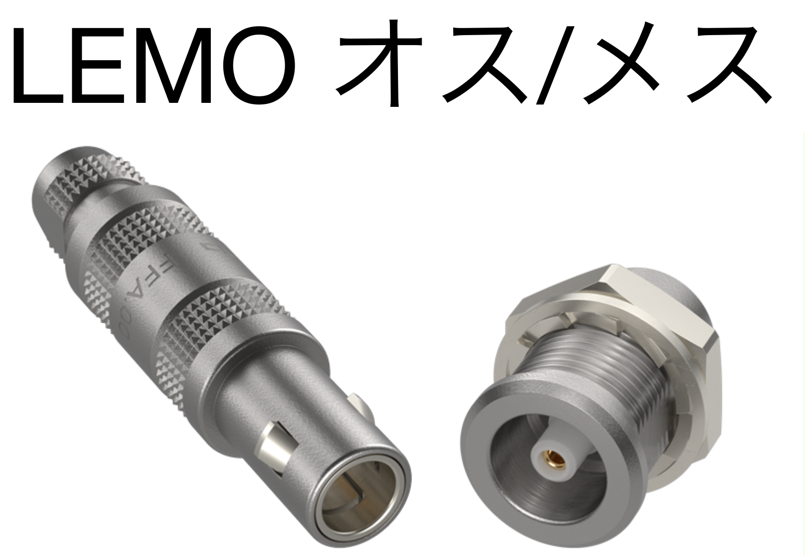

前置き
私は関わったことない内容に関して色々単語出されてもわからないよぉということが多いので、実験装置に関する用語をまとめてみました。 ここの内容は信じすぎず使う前には自分で型番を調べて仕様を確認することをおすすめします。
よく使う実験器具名称一覧
一般のいろいろ
| 名称 | 説明 |
|---|---|
| NIM (Nuclear Instrument Module Bin) | 核物理学や高エネルギー物理学の実験で使用される標準化された電子機器の筐体 |
| NIMビン | 様々な電子モジュールを収納するための箱型の構造で、これらのモジュールは実験装置の制御やデータ収集などに使用されます。 |
| ラック | NIMビンや電源などを格納するための棚 |
| Hi-Vol, Low-Vol | 大体, ~V- |
| DAQ (Data AcQuisition) | 幅広くデータ収集のこと |
| LEMOケーブル | 細く、一応大体カラーコードに従って色付けられている。（20 cm, 1 nsのdelay） |
| Hi-Volケーブル | 結構太く端子としては-が使われることが多い |
| hoge | huga |
端子
| 名称 | 説明 |
|---|---|
| BNC端子 | BNC(Bayonet Neill-Concelman)コネクタを持つケーブルをBNCケーブルと呼ぶ。半導体検出器や光電子増倍管からの信号を運ぶときによく用いる。LEMOケーブルより太い。

|
| SHV端子 | SHV(Safe High Voltage)コネクタを持つケーブルをSHVケーブルと呼ぶ。光電子増倍管などに高電圧をかけたいときに用いる。見た目はBNCケーブルに似ているが、コネクタの形状が違うためSHVケーブルとBNCケーブルを間違って接続することはない。

|
| MHV端子 | MHV端子は、SHV端子と同様に高電圧を安全に伝えるためのコネクタだが、SHV端子よりもさらに高い電圧に対応している。MHVは"Miniature High Voltage"の略で、主に高エネルギー物理学の実験装置で使用される。見た目はSHV端子に似ているが、MHV端子はさらに大きくて頑丈な構造を持っている。

|
| LEMO端子 | LEMOとは会社の名前。 LEMOケーブルの用途はBNCケーブルに似ているが、BNCケーブルよりも細くて便利。 コネクタの形状もBNCより小さい。NIMモジュールでロジック回路を作るときによく使う。  |
モジュール
| 名称 | 説明 |
|---|---|
| プレアンプ | |
| ディスクモジュール | |
| ディレイモジュール | |
| FANIN/FANOUTモジュール | |
| Clockモジュール | |
| Scaler/Counterモジュール | |
| High-Voltage モジュール |
ノイズに関して
ノイズの原因
- 周辺機器からの電磁波（テーブルトップで実験を行っている時には携帯などは気をつけて.ファンなどもノイズになりやすい）
- グランドの不一致（いろんな機器にグランドをつなげる必要がありますが、そのグランド源は統一する必要があります。）
- 機器が暑くなるとノイズが増えたりします。温度を管理しましょう。
- 接続機器間でのインピーダンスが一致していないと信号の反射が起こりノイズとなります。
- 当然ですが光の検出器では光漏れがあるとノイズになったりするので、遮光を改めて確認しましょう。
- 振動などもノイズとなったりします。機器やケーブルはできる限り固定しましょう。
対策?
- 電磁波に関しては、アルミホイルで巻いて電磁遮蔽効果でノイズをある程度遮断することができます。
- 温度を管理した上で、金属製の遮蔽ボックスに入れることもできます。